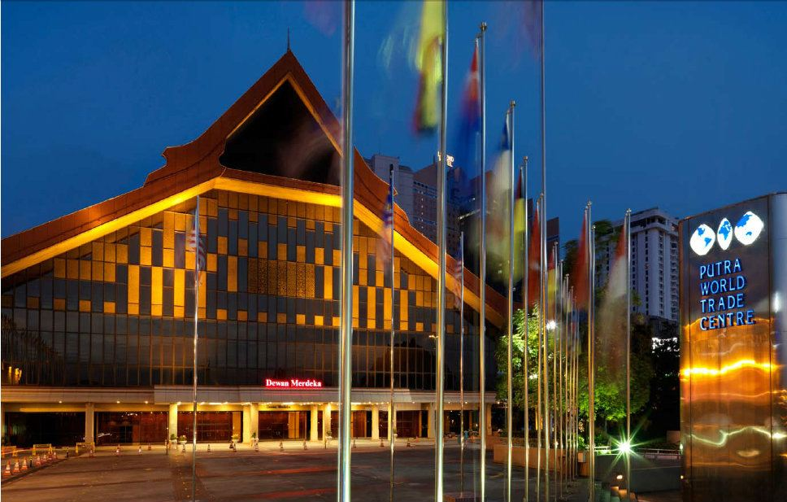

|  |
World Trade Centre Kuala Lumpur, formerly known as Putra World Trade Centre (PWTC; Malay: Pusat Dagangan Dunia Putra), is a convention and exhibition centre at, Kuala Lumpur, Malaysia. The venue is sprawled over 1.70 million square feet with 235,000 square feet of exhibition space.